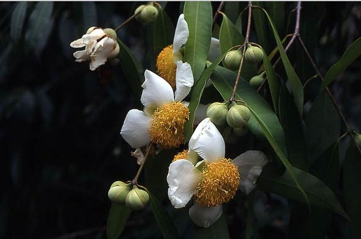
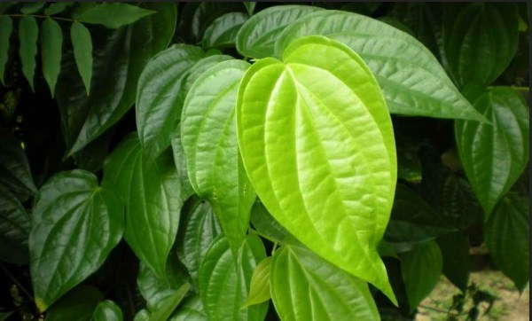
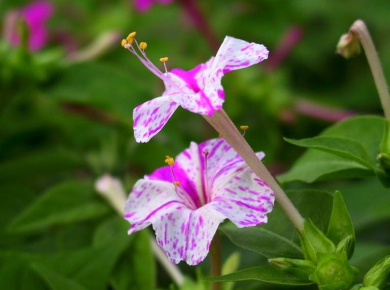
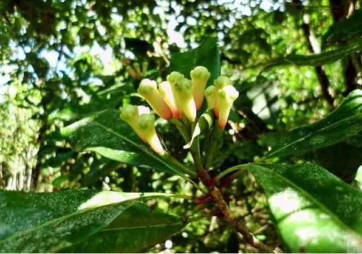

-
Nagasari 31 Oktober 2017Dewadaru atau nagasari (Mesua ferrea L.) adalah sejenis pohon anggota suku manggis-manggisan (Clusiaceae) yang kayunya bernilai ekonomi tinggi
-
Sirih 31 Oktober 2017Sirih merupakan tanaman asli Indonesia yang tumbuh merambat atau bersandar pada batang pohon lain. Sebagai budaya daun
-
Bunga Asar 31 Oktober 2017Bunga ashar dikenal juga sebagai kembang pukul empat atau Four o’clock plant yang dalam bahasa latin
-
 Anggrek Larat 31 Oktober 2017Anggrek larat adalah salah satu bunga identitas Indonesia khususnya di Maluku. Tumbuhan ini memiliki
Anggrek Larat 31 Oktober 2017Anggrek larat adalah salah satu bunga identitas Indonesia khususnya di Maluku. Tumbuhan ini memiliki -
Cengkeh 31 Oktober 2017Cengkeh adalah sejenis bunga kering dari tanaman syzygium aromaticum. Cengkeh memiliki nama lain
- chevron_left
- 1
- 2
- 3
- 4
- 5
- 6
- 7
- chevron_right